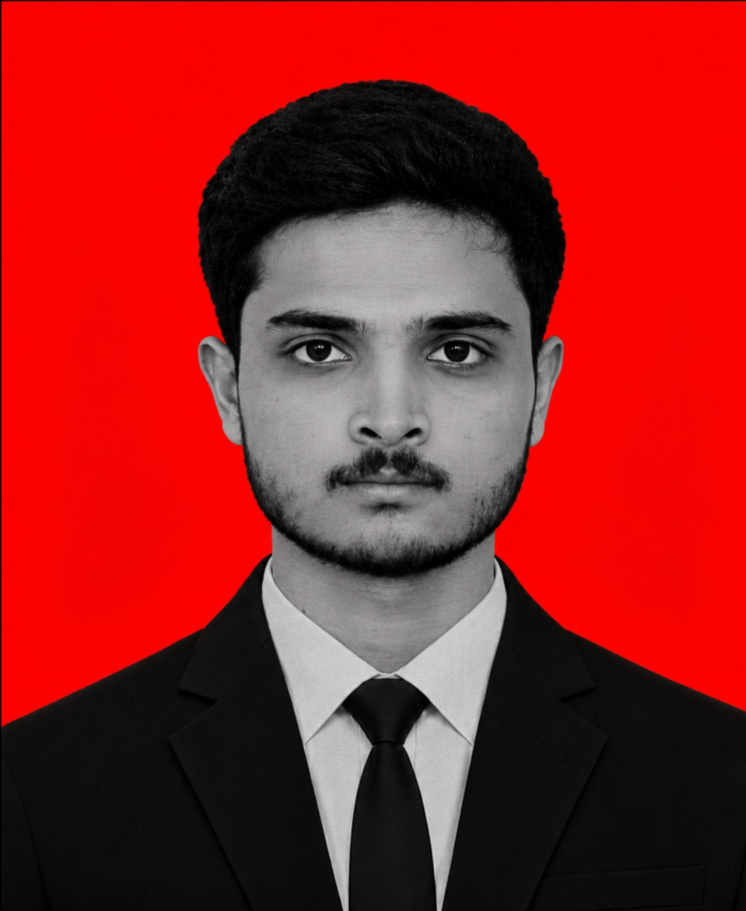

AI / NLP002
AI
SCANNING PROFILE_
AI Resume Analyzer
Analyzes resumes against role requirements and helps surface relevant skills and improvement areas.
SOURCE CODE ↗Hello, I'm
I build thoughtful digital products, intelligent applications and reliable systems — turning ideas into useful experiences through code.

ENGINEER PROFILE
A computer science student who enjoys solving practical problems with software, data and AI.
I'm Mittapally Sai Vivek, a Computer Science & Engineering student at Kommuri Pratap Reddy Institute of Technology, graduating in 2027. I enjoy building end-to-end applications — from clean interfaces and APIs to data-backed features and AI-powered workflows.
My approach is simple: understand the problem, build a useful solution, test it, and keep improving. I'm currently strengthening my foundations in software engineering while exploring practical applications of large language models.
“Build things that work. Make them clear. Keep learning how to make them better.”
BUILT & EXPERIMENTED
A selection of applications across AI, analytics, automation and web development.
An AI application built around two language models, designed to compare or combine model responses for a more useful workflow. Replace this description with the exact capabilities and architecture of your implementation.
Analyzes resumes against role requirements and helps surface relevant skills and improvement areas.
SOURCE CODE ↗Explores customer behaviour and sales patterns with PostgreSQL, SQL analysis and RFM segmentation.
SOURCE CODE ↗Interactive dashboard with student records, subject-level insights and CRUD functionality.
LIVE PROJECT ↗ML-based project exploring student attributes and placement outcome prediction.
VIEW GITHUB ↗Security event tracking project with a SQLAlchemy-backed threat events data model.
SOURCE CODE ↗Responsive weather interface with a polished visual design and animated UI elements.
LIVE PROJECT ↗Web-based speed test experience focused on a simple interface for connection metrics.
LIVE PROJECT ↗* Project descriptions are concise portfolio summaries. Update any implementation details that differ from the shipped versions.
TOOLS & TECHNOLOGIES
A growing toolkit for building full-stack products, data workflows and AI applications.
HAVE A PROJECT OR OPPORTUNITY?
I'm interested in software engineering roles, internships and opportunities to build useful products with great teams.
GET IN TOUCH ↗